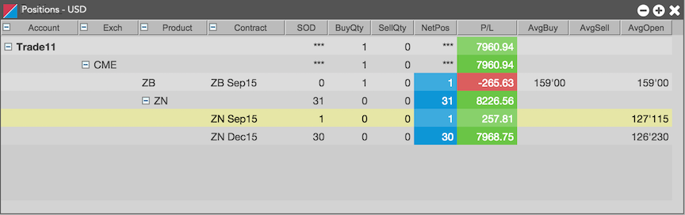
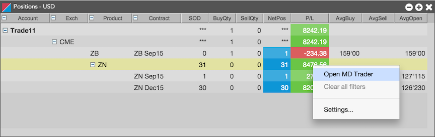

The Positions widget displays your positions (SODs and any daily transactions) and P/L across all of your accounts.

You can easily open the MD Trader® widget from the Position widget. Right-click on any contract, product, or account and open the widget. If you open an MD Trader® widget for an item with multiple children, an MD Trader® widgets opens for each contract. For example, if you opened MD Trader® from the ZN product in the following Positions widget, two MD Trader® widgets would open, one each for the ZN Sep15 and ZN Dec15 contracts.

You can configure the widget to customize how you want to group and order the positions. To configure the widget, right-click anywhere in the widget and select Settings from the context menu.